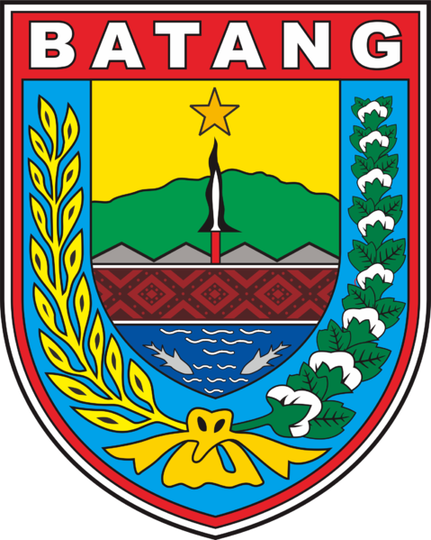

Nama Desa
| Kecamatan | Tulis |
|---|---|
| Kabupaten | Batang |
| Informasi | Deskripsi desa KKN... |
Wilayah Desa KKN Reguler Universitas Diponegoro 2026

Penduduk desa membutuhkan bantuanmu! Analisis grafik status desa di peta ini dan...
| Kecamatan | Tulis |
|---|---|
| Kabupaten | Batang |
| Informasi | Deskripsi desa KKN... |